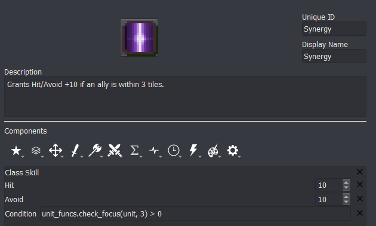

Conditionals
last updated v0.1
Conditionals are perhaps the most powerful tool in the game designer’s arsenal. They allow you to further refine how and when certain events will occur, abilities can be activated, or items will behave, and much more.

All conditionals in the Lex Talionis engine are evaluated at runtime by a Python evaluation engine. As such, this means that all conditionals must be written in valid Python. At first this may seem to have a strict learning curve, but the minimal Python needed to write conditionals can be learned easily. Having the conditionals evaluated by a real programming language like Python enables them to be much more powerful and expressive than would otherwise be possible.
Event Objects

While checking the conditionals for an event (whether that be through the Condition box in the left pane of the Event Editor or through an if statement), the event may expose certain variables with extra information.
For instance, in a unit_wait event, the unit variable is set to the unit that just waited. You could use the unit variable now to figure out which unit just waited, their team, their class, etc.
Each event exposes a different set of variables. Check out the Trigger List section in the Event-Overview for more information.
Boolean Operators
You can use and, or, and not to combine or invert conditionals as necessary. A and B returns true if both A and B return true individually, otherwise it will return false. A or B returns true if either A or B return true individually, otherwise it will return false. not A will return true if A is false, and vice versa.
You can do this more than once in a chain. For instance (A and B) or C will check whether A and B are both true, or C is true. If C is false and it is not the case that both A and B are true, then it will return false.
Example Use Case: game.check_alive('Joel') and game.check_alive('Nia') to check that both characters are alive before giving them a post-battle conversation.
List comprehensions
Sometimes you need to check the values for several objects at once. You can do this using Python list comprehensions.
Python list comprehensions follow a simple syntax:
[obj for obj in list_of_objects if obj is good]
This python statement will return a list of the objects in list_of_objects, filtered by the if statement at the end, so it will only return the good objects. The if statement at the end is optional and can be left off if you don’t want to filter the object list by any property.
Example (Checks if a unit has a skill with nid Vantage)
if;'Vantage' in [skill.nid for skill in unit.skills]
s;{unit};I have vantage!
end
You can use the python functions len, sum, any, and all on list comprehensions.
Example (Checks if any player unit’s y position on the map is less than 13)
any(unit.position[1] < 13 for unit in game.units if unit.position and unit.team == 'player')
lenreturns the number of objects in the listsumadds up the objects in the listanyreturns True if at least one object in the list is trueallreturns True if all objects in the list are true
If you are new to Python, you can always find out more information by just googling it. These days, Python is a common first-time coders language, so there is lots of information out there for beginners.
Common Tasks
Check if the unit referenced by the event is a specific unit
unit.nid == 'Eirika'
Check if the region referenced by the event is a specific region
region.nid == 'House1'
Check if a unit is alive
game.check_alive(unit.nid) or game.check_alive('Eirika')
Check if a unit is dead
game.check_dead(unit.nid) or game.check_dead('Eirika')
Check the team of a unit
unit.team == 'player' or game.get_unit('Eirika').team == 'player'
Check the current turn number
game.turncount == 5 or game.turncount < 10
Check nid of terrain at a position
game.tilemap.get_terrain(position)
Check name of terrain at a position
DB.terrain.get(game.tilemap.get_terrain(position)).name
Check the current mode
game.mode.nid == 'Lunatic'
Check the current level
game.level.nid == 'Chapter 2'
Access a level variable
game.level_vars['num_switches']
Access a game variable
game.game_vars['villages_saved']
Example:
if;game.game_vars['villages_saved'] >= 3
give_item;Protagonist;Reward
end
Variables can also be accessed in the following manner in the event editor:
{v:num_switches} or {v:villages_saved}
Example:
if;{v:villages_saved} >= 3
give_item;Protagonist;Reward
end
Check if a boss unit has already given their fight quote for the challenger
check_pair('Lyon', 'Eirika')
Check if a boss unit has already given their default fight quote. Eirika and Ephraim are the units with non-default fight quotes
check_default('Lyon', ['Eirika', 'Ephraim']) or check_default('Batta', [])
Check size of party
len(game.get_units_in_party())
Example:
if;len(game.get_units_in_party()) < 5
alert;You have lost too many members of your party
lose_game
end
Full Useful Attributes of Global Game Object
The game object is a very powerful source of information about the state of the game. It keeps track of all units in the current level as well as all non-generic units ever loaded into the game (whether alive or dead).
game_vars: dict[str: ??]
level_vars: dict[str: ??]
playtime: float # How long has the player been playing on this save file
turncount: int
units: list # List of all units the game is tracking
mode: DifficultyModeObject # the current mode
level: LevelObject # the current level object
tilemap: TileMapObject # The current tilemap
party: PartyObject # the current party
get_unit(str) -> UnitObject # Returns a Unit with the given nid
get_region(str) -> RegionObject # Returns a Region with the given nid
get_party(str) -> PartyObject # Returns the party with the given nid
get_all_units() -> list # Returns all alive units on the map
get_player_units() -> list # All alive player units on the map
get_enemy_units() -> list # All alive enemy units on the map
get_all_units_in_party(str?) -> list # All non-generic player units in the given party (defaults to current party)
get_units_in_party(str?) -> list # All alive non-generic player units in the given party (defaults to current party)
check_dead(str) -> bool
check_alive(str) -> bool
get_money() -> int # money of current party